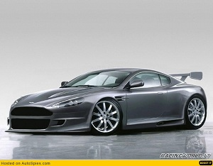
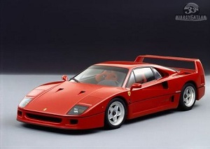
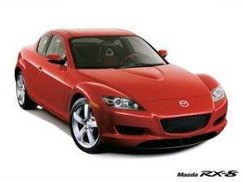
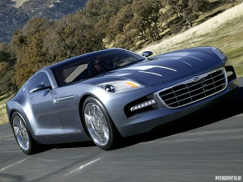

Aston Martin Vantage Az Aston Martin annyira tķlmutat a normŠlis autůk vilŠgŠn, hogy csodŠlkoznťk, ha akadna olyan olvasůnk, aki vesz egyet, bŠr arra jů esťly van, hogy aki vťgŁl igen, az elűtte nŠlunk nťz utŠna. Hogy is van a sportos autůk szamŠrlťtrŠja? Kezdem, mondjuk, a nagyszerŻ Fiat Panda 100HP-vel, 3 milliůťrt, amit esetleg adott esetben meg is vennťk. AztŠn jŲn a kortŠrs hot hatch felhozatal, ami nem kťne, a nehťz, kitŲmŲtt Golf GTI-kkel ťs Focus ST-kkel. Egy jů Subaru Impreza WRX STI-vel vagy Honda S2000-rel mŠr Št is lťptŁk a tŪzmilliůs hatŠrt, ami egy bťrbűl ťs fizetťsbűl ťlűnek gyakorlatilag nem lťtezűvť tesz egy ķj autůt.

Ferrari F40 UtŠlom leŪrni, de sajnos az F40-est nem volt alkalmam kiprůbŠlni a cikk megŪrŠsa elűtt. Sűt, valůszŪnŻleg soha nem is lesz. Csak esetleg akkor, ha mondjuk sikerŁl Ųsszehaverkodni a brunei szultŠnnal. Utůbbinak sajnos elhanyagolhatů az esťlye, mivel viszonylag ritkŠn jŠrunk ugyanazon szůrakozůhelyekre. MŠs tŪpusķ Ferrarit mťg sikerŁlt volna felhajtani egy menetprůba erejťig, de sajnos idű hiŠnyŠban ezt is elvetettŁk. Marad tehŠt a nyŠlcsorgatŠs.

Mazda RX 8 A Mazda RX-8-as nem csak autůkťnt vagy lŠtvŠnykťnt szŠmŪt ťrdekessťgnek, hanem a sztorija is rendkŪvŁl kŁlŲnleges. KezdjŁk rŲgtŲn a legelejťn. ÷tvenes ťvek, NťmetorszŠg. Felix Wankel professzor, egy nťmet mťrnŲk-gťniusz 1957-ben szabadalmaztatta a forgůdugattyķs motor terveit. A konstrukciů lťnyege, hogy egy domborķ oldalķ hŠromszŲg (azaz epitrochoid) alakķ forgůdugattyķ pŲrŲg excentrikusan a fűtengely kŲrŁl, ťs egyszerre vťgzi a szŪvŠs, a sŻrŪtťs, az expanziů, ťs a kipufogŠs feladatŠt.

Chrysler Crossfire Nťmet lapok informŠciůi szerint a Chrysler erűsen visszaveszi a Crossfire gyŠrtŠsŠt. Az amerikaiak jelenleg ťvente 12.000 darabot ťpŪtenek a kupťbůl, illetve a roadsterbűl, sajnŠlatos můdon azonban a termelťs jelentűs rťsze ott porosodik a mŠrkakereskedťsekben. Jelenleg a mŠrka piaci elemzűi szerint ťvi 4000 darabra lenne reŠlis kereslet, a Chrysler szůvivűje persze "roppant pesszimistŠnak" nevezte ezeket a sajtůťrtesŁlťseket, mivel azonban ennťl komolyabb cŠfolat nem ťrkezett rŠ, ezťrt valůszŪnŻsŪthetű, hogy tťnyleg nem Šll olyan jůl a modell szťnŠja.